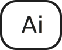
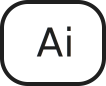

04
ANIMATION
SPIL

I dette tema blev vi introduceret til CSS-animation og JavaScript. Vi blev også præsenteret for idé-genereringsmetoden "kryds-metoden", som vi anvendte til at finde et handlingsforløb til vores spil. I dette tema fokuserede vi på UI-elementer, figur-elementer, design af assets, baggrundsdesign og kompositionsteknikker i designprocessen. Vi arbejdede med filformaterne; .svg . mp3 . wav.
DESIGNPROCESS
I designprocessen, valgte jeg at bruge Jade Browns stil som inspiration. Denne stil er kendetegnet ved stærke farver, kontraster, fed tekst, asymmetriske figurer og atmosfæriske baggrunde.

SKITSER
I skitsefasen visualiserede jeg handlingsforløbet for spillet samt identificerede de skærme, assets og UI-elementer, jeg ønskede at bruge i spillet.


ASSETS
Jeg udarbejdede de asstest jeg gerne ville have skulle indgå i mit spil, både en god og en dårlig.

UI - ELEMENTER
De ovenstående elementer er mine UI-elementer. Tiden starter som grøn og gradvist skifter til rød, jo længere tiden går. Derudover er livene illustreret med et hjerte-symbol og point med tal.


MOCK UP
Efter at have defineret stilen, udarbejdet skitser og fastlagt et handlingsforløb og de nødvendige assets og UI-elementer, påbegyndte jeg arbejdet med mock-up'en.
I baggrunden til mit spil har jeg anvendt atmosfærisk perspektiv ved at bruge forskellige nuancer af blå til skyerne. Jeg har valgt en mørkere blå farve til skyerne i baggrunden og en lysere blå farve til skyerne i forgrunden for at skabe en fornemmelse af dybde og afstand.


LYDE
Jeg optog lyden med fokus på støjniveauet (noisefloor). Jeg optog en god lyd, som blev afspillet, når man klikkede på den gode asset, og en dårlig lyd, når man klikkede på en dårlig asset. Lyden blev gemt som en mp3-fil og blev derefter implementeret i min kode.
God lyd
Dårlig lyd
AKTIVITETSDIAGRAM
Jeg udarbejdede et aktivitetsdiagram for at visualisere hvilke aktiviteter, der skulle foregå i spillet og i hvilken proces og rækkefølge. Rektanglerne beskriver aktiviteten og pilene forbinder aktiviteterne og visualisere røkkefølgen.
I spillet falder glade og sure smileyer ned fra himlen. Målet er at fange mindst 10 glade smileyer og undgå de sure. Når man klikker på en glad smiley, får man 1 point, smileyen forsvinder og man hører en "wuii" lyd. Hvis man klikker på en sur smiley, mister man 1 liv, smileyen forsvinder og man hører en "waa" lyd. Spillet varer 20 sekunder, som vises med et ur. For at vinde skal man have mindst 10 point, og pointene vises med tal. Man starter med 3 liv, som vises med hjerter og tal. Hvis man mister alle 3 liv, har man tabt og spillet afsluttes.

STATEMACHINEDIAGRAM
Jeg udarbejdede et state machine diagram for at visualisere systemet, overgangene og tilstandene, som spillet skulle indeholde. Diagrammet viser også de handlinger, der skal udføres for at skifte mellem tilstandene.

KODER
I dette tema lærte vi at anvende CSS-animationer og integrere JavaScript. I CSS-koden kan det ses, at jeg har givet animationen navnet "fall_kf", hvor "kf" står for keyframes. Derefter har jeg defineret, at animationen skal vare i 3 sekunder og gentages uendeligt. Jeg har også angivet, at timingfunktionen skal være lineær, hvilket betyder, at den afspilles jævnt hver gang. I @keyframes fall_kf-delen har jeg specificeret, at i 100% af animationens varighed skal elementet translateres (flyttes) med 500% af sin egen størrelse. Dette er gjort for at skabe en faldende effekt ned ad siden. Samlet set viser dette, at jeg har anvendt CSS-animation til at oprette en "fall_kf" animation, der varer 3 sekunder, gentages uendeligt og får elementet til at bevæge sig med 500% af sin størrelse. Dette skaber en visuel effekt af elementets fald ned ad siden.
I JavaScript-koden kan det ses, hvordan jeg tilføjer funktionaliteten til at få den glade smiley til at falde fra tilfældige positioner og med tilfældige forsinkelser. Jeg tilføjer en eventlistener til smiley-elementet med id'et "glad1", der lytter efter "mousedown"-begivenheden, hvilket betyder, at brugeren har klikket på smiley'en. Når dette sker, bliver funktionen "gladClickHandler" udført. Dette giver mulighed for at tilføje yderligere funktionalitet til at reagere på klikhændelser. Jeg tilføjer også en eventlistener til "glad1", der lytter efter "animationiteration"-begivenheden, hvilket indikerer, at animationen på smiley'en er afsluttet og starter igen fra begyndelsen. Når dette sker, bliver funktionen "gladReset" udført. Dette giver mulighed for at nulstille eller gentage animationen. Samme tilgang gentages for "glad2", hvor jeg opretter to smileys med tilsvarende funktionalitet. Dette betyder, at både "glad1" og "glad2" har eventlisteners til "mousedown" og "animationiteration", der udfører de tilknyttede funktioner "gladClickHandler" og "gladReset".


 
